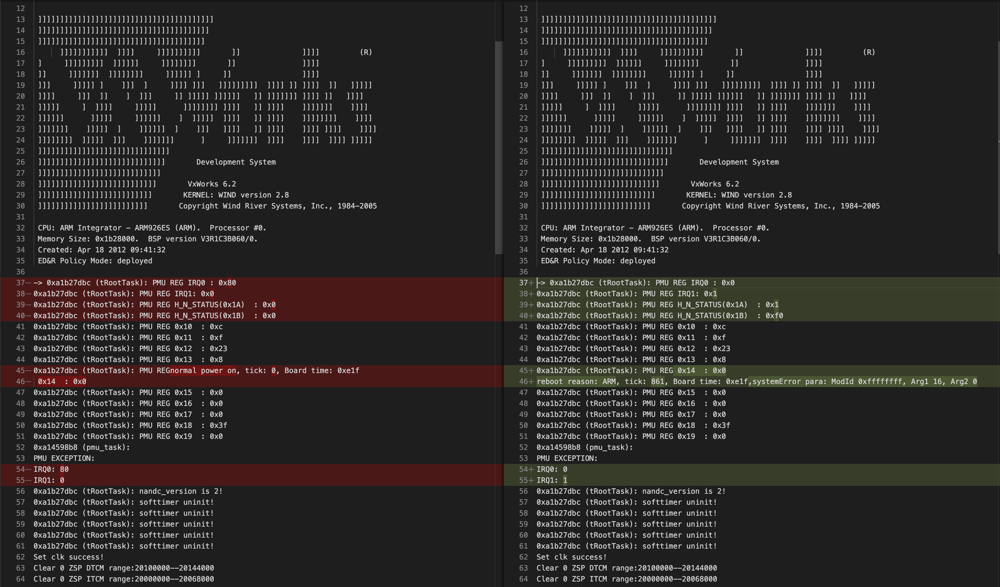

Programming, electronics, lifestyle
Диагностика и восстановление сотового модема Huawei E352
На моей прошлой работе где мы занимались дронами, как-то раз после перепайки встроенного USB разъёма на удлиненный, перестал работать USB модем. Мой коллега хотел его выкинуть, но я забрал себе, с целью поиграться с ним и попытаться восстановить.
Точное название модели написанное на корпусе: Huawei E352s-2 от Мегафон.
Прошло 4 года, и я задумал делать свою АТС для ретрансляции звонков. Для чего понадобился обычный 3G модем и я решил посмотреть, что с ним не так. Для начала я просто взял и воткнул его в Raspberry Pi и он сразу заработал.
> lsusb
...
Bus 001 Device 013: ID 12d1:1506 Huawei Technologies Co., Ltd. Modem/Networkcard
...
Я подумал, что мб тогда были не те драйвера или еще какой-то софтверный баг который уже прошел. И занялся изучением того, как этот модем взаимодействует с системой, сделав вывод всех устройств системы, а после чего выключил его, чтобы выявить какие устройства он создает в системе.
> ls -l /dev/
...
drwxr-xr-x 2 root root 80 Jan 22 08:40 bsg
...
crw------- 1 root root 180, 176 Jan 22 08:40 cdc-wdm0
lrwxrwxrwx 1 root root 3 Jan 22 08:40 cdrom -> sr0
...
brw-rw---- 1 root disk 8, 0 Jan 22 08:40 sda
drwxr-xr-x 4 root root 80 Jan 22 08:40 serial
...
crw-rw---- 1 root disk 21, 0 Jan 22 08:40 sg0
crw-rw---- 1 root cdrom 21, 1 Jan 22 08:40 sg1
...
brw-rw---- 1 root cdrom 11, 0 Jan 22 08:40 sr0
...
crw-rw---- 1 root dialout 188, 0 Jan 22 08:40 ttyUSB0
crw-rw---- 1 root dialout 188, 1 Jan 22 08:40 ttyUSB1
crw-rw---- 1 root dialout 188, 2 Jan 22 08:40 ttyUSB2
...
После того, как я модем включил он не работал вовсе. То-есть даже не отображался в как подключенное USB устройство и не мигал индикатором.
Собственно первое что я сделал:
- пошевелил USB провод,
- прозвонил его
- проверил правильность того, как он припаян
- померил напряжение в точках припайки провода к модему
Все было хорошо. И я не понимал, как только что работающий модем мог перестать работать за секунду. Я решил отмести все варианты с проводом и припаял проверенный экранированный провод небольшой длины от зарядника iPhone, а затем разъём напрямую проводками длиной 1.5см. Но результаты были те же, и я понял что нужно копать глубже, после чего снял экраны.

Плата промаркирована CH2E353SM VER. A-RF.
Hi6755RBCH8BCS0PE0MBR-46M-C(на datasheets360.com удалось найти для H8BCS0SI0BAR)Hi6331RBCHi6481RBCSKY77344-21(datesheet)RF1194A(datesheet)A2001 K1231 F6129(кажется этот datesheet)05 1228 K9UHEPCOS 7697AVAGO FF1226
И есть еще пару крошечных микросхем, но они находятся под радиатором слева от кварцевого генератора, где я не могу их разглядеть.
Первым делом я проверил цепи питания на выводах конденсаторах. Короткого замыкания я не обнаружил, при подачи питания везде оно было, а также присутствовало на некоторых пинах для отладки и флешкарты. Как я понял, не загружался сам микроконтроллер. Необходимо было найти отладочный интерфейс и посмотреть на вывод МК. На взгляд сразу бросались несколько аккуратных контактных кружочков. Потыкав в них RX линией моего USB-UART преобразователя я обнаружил TX линию микроконтроллера. Подобрав Baudrate, он оказался равен 115200, появился читаемый текст.
onchip
MF_boot!
UnSec_boot!
bootload..
enter bootload>>> unsafe boot,unsafe bin
Bootload over 16k,needn't sec check.
MemErr!bootload..
enter bootload>>> unsafe boot,unsafe bin
Bootload over 16k,needn't sec check.
MemErr!bootload..
...
Из вывода стало понятно, что прошивка не может загрузиться из-за проблем в памяти. После чего я надавил на чип памяти и пошла загрузка операционной системы модема и он включился. После я проделал эту операцию ещё несколько раз и всё получалось. Иногда модем сразу стартовал без всяких проблем.
onchip
MF_boot!
UnSec_boot!
bootload..
enter bootload>>> unsafe boot,unsafe bin
Bootload over 16k,needn't sec check.
press space to enter bootrom : NAND ID is:1500A1ADNANDC Ver is 00000002enter vxworks >>>vxworks...
abGo..cdeefAttaching interface lo0... done
Adding 36640 symbols for standalone.
]]]]]]]]]]]]]]]]]]]]]]]]]]]]]]]]]]]]]]]]
]]]]]]]]]]]]]]]]]]]]]]]]]]]]]]]]]]]]]]]
]]]]]]]]]]]]]]]]]]]]]]]]]]]]]]]]]]]]]]
]]]]]]]]]]] ]]]] ]]]]]]]]]] ]] ]]]] (R)
] ]]]]]]]]] ]]]]]] ]]]]]]]] ]] ]]]]
]] ]]]]]]] ]]]]]]]] ]]]]]] ] ]] ]]]]
]]] ]]]]] ] ]]] ] ]]]] ]]] ]]]]]]]]] ]]]] ]] ]]]] ]] ]]]]]
]]]] ]]] ]] ] ]]] ]] ]]]]] ]]]]]] ]] ]]]]]]] ]]]] ]] ]]]]
]]]]] ] ]]]] ]]]]] ]]]]]]]] ]]]] ]] ]]]] ]]]]]]] ]]]]
]]]]]] ]]]]] ]]]]]] ] ]]]]] ]]]] ]] ]]]] ]]]]]]]] ]]]]
]]]]]]] ]]]]] ] ]]]]]] ] ]]] ]]]] ]] ]]]] ]]]] ]]]] ]]]]
]]]]]]]] ]]]]] ]]] ]]]]]]] ] ]]]]]]] ]]]] ]]]] ]]]] ]]]]]
]]]]]]]]]]]]]]]]]]]]]]]]]]]]]]
]]]]]]]]]]]]]]]]]]]]]]]]]]]]] Development System
]]]]]]]]]]]]]]]]]]]]]]]]]]]]
]]]]]]]]]]]]]]]]]]]]]]]]]]] VxWorks 6.2
]]]]]]]]]]]]]]]]]]]]]]]]]] KERNEL: WIND version 2.8
]]]]]]]]]]]]]]]]]]]]]]]]] Copyright Wind River Systems, Inc., 1984-2005
CPU: ARM Integrator - ARM926ES (ARM). Processor #0.
Memory Size: 0x1b28000. BSP version V3R1C3B060/0.
Created: Apr 18 2012 09:41:32
ED&R Policy Mode: deployed
-> 0xa1b27dbc (tRootTask): PMU REG IRQ0 : 0x80
0xa1b27dbc (tRootTask): PMU REG IRQ1: 0x0
0xa1b27dbc (tRootTask): PMU REG H_N_STATUS(0x1A) : 0x0
0xa1b27dbc (tRootTask): PMU REG H_N_STATUS(0x1B) : 0x0
0xa1b27dbc (tRootTask): PMU REG 0x10 : 0xc
0xa1b27dbc (tRootTask): PMU REG 0x11 : 0xf
0xa1b27dbc (tRootTask): PMU REG 0x12 : 0x23
0xa1b27dbc (tRootTask): PMU REG 0x13 : 0x8
0xa1b27dbc (tRootTask): PMU REGnormal power on, tick: 0, Board time: 0xe1f
0x14 : 0x0
0xa1b27dbc (tRootTask): PMU REG 0x15 : 0x0
0xa1b27dbc (tRootTask): PMU REG 0x16 : 0x0
0xa1b27dbc (tRootTask): PMU REG 0x17 : 0x0
0xa1b27dbc (tRootTask): PMU REG 0x18 : 0x3f
0xa1b27dbc (tRootTask): PMU REG 0x19 : 0x0
0xa14598b8 (pmu_task):
PMU EXCEPTION:
IRQ0: 80
IRQ1: 0
0xa1b27dbc (tRootTask): nandc_version is 2!
0xa1b27dbc (tRootTask): softtimer uninit!
0xa1b27dbc (tRootTask): softtimer uninit!
0xa1b27dbc (tRootTask): softtimer uninit!
0xa1b27dbc (tRootTask): softtimer uninit!
0xa1b27dbc (tRootTask): softtimer uninit!
Set clk success!
Clear 0 ZSP DTCM range:20100000--20144000
Clear 0 ZSP ITCM range:20000000--20068000
NO.0 static sector
src addr is 0xa14b9b4c
dst addr is 0x20000600
sector size is 0x00000104
NO.1 static sector
src addr is 0xa14b9c50
dst addr is 0x20000710
sector size is 0x00000870
NO.10 static sector
src addr is 0xa1555218
dst addr is 0x20001600
sector size is 0x00019a30
NO.13 static sector
src addr is 0xa157aa9c
dst addr is 0x20106c30
sector size is 0x00001000
NO.22 static sector
src addr is 0xa15b82b8
dst addr is 0x20107f00
sector size is 0x00015b80
NO.23 static sector
src addr is 0xa15cde38
dst addr is 0x20143400
sector size is 0x000007c0
NO.24 static sector
src addr is 0xa15ce5f8
dst addr is 0x20143e00
sector size is 0x0000011c
zspFileLoad finished!
ZSP leave reset!
0xa1b27dbc (tRootTask): ulZSPSize = 1134728!
Starting USBware stack, Version 3.4.30.13
onchip
MF_boot!
UnSec_boot!
bootload..
enter bootload>>> unsafe boot,unsafe bin
Bootload over 16k,needn't sec check.
press space to enter bootrom : NAND ID is:1500A1ADNANDC Ver is 00000002enter vxworks >>>vxworks...
abGo..cdeefAttaching interface lo0... done
Adding 36640 symbols for standalone.
]]]]]]]]]]]]]]]]]]]]]]]]]]]]]]]]]]]]]]]]
]]]]]]]]]]]]]]]]]]]]]]]]]]]]]]]]]]]]]]]
]]]]]]]]]]]]]]]]]]]]]]]]]]]]]]]]]]]]]]
]]]]]]]]]]] ]]]] ]]]]]]]]]] ]] ]]]] (R)
] ]]]]]]]]] ]]]]]] ]]]]]]]] ]] ]]]]
]] ]]]]]]] ]]]]]]]] ]]]]]] ] ]] ]]]]
]]] ]]]]] ] ]]] ] ]]]] ]]] ]]]]]]]]] ]]]] ]] ]]]] ]] ]]]]]
]]]] ]]] ]] ] ]]] ]] ]]]]] ]]]]]] ]] ]]]]]]] ]]]] ]] ]]]]
]]]]] ] ]]]] ]]]]] ]]]]]]]] ]]]] ]] ]]]] ]]]]]]] ]]]]
]]]]]] ]]]]] ]]]]]] ] ]]]]] ]]]] ]] ]]]] ]]]]]]]] ]]]]
]]]]]]] ]]]]] ] ]]]]]] ] ]]] ]]]] ]] ]]]] ]]]] ]]]] ]]]]
]]]]]]]] ]]]]] ]]] ]]]]]]] ] ]]]]]]] ]]]] ]]]] ]]]] ]]]]]
]]]]]]]]]]]]]]]]]]]]]]]]]]]]]]
]]]]]]]]]]]]]]]]]]]]]]]]]]]]] Development System
]]]]]]]]]]]]]]]]]]]]]]]]]]]]
]]]]]]]]]]]]]]]]]]]]]]]]]]] VxWorks 6.2
]]]]]]]]]]]]]]]]]]]]]]]]]] KERNEL: WIND version 2.8
]]]]]]]]]]]]]]]]]]]]]]]]] Copyright Wind River Systems, Inc., 1984-2005
CPU: ARM Integrator - ARM926ES (ARM). Processor #0.
Memory Size: 0x1b28000. BSP version V3R1C3B060/0.
Created: Apr 18 2012 09:41:32
ED&R Policy Mode: deployed
-> 0xa1b27dbc (tRootTask): PMU REG IRQ0 : 0x0
0xa1b27dbc (tRootTask): PMU REG IRQ1: 0x1
0xa1b27dbc (tRootTask): PMU REG H_N_STATUS(0x1A) : 0x1
0xa1b27dbc (tRootTask): PMU REG H_N_STATUS(0x1B) : 0xf0
0xa1b27dbc (tRootTask): PMU REG 0x10 : 0xc
0xa1b27dbc (tRootTask): PMU REG 0x11 : 0xf
0xa1b27dbc (tRootTask): PMU REG 0x12 : 0x23
0xa1b27dbc (tRootTask): PMU REG 0x13 : 0x8
0xa1b27dbc (tRootTask): PMU REG 0x14 : 0x0
reboot reason: ARM, tick: 861, Board time: 0xe1f,systemError para: ModId 0xffffffff, Arg1 16, Arg2 0
0xa1b27dbc (tRootTask): PMU REG 0x15 : 0x0
0xa1b27dbc (tRootTask): PMU REG 0x16 : 0x0
0xa1b27dbc (tRootTask): PMU REG 0x17 : 0x0
0xa1b27dbc (tRootTask): PMU REG 0x18 : 0x3f
0xa1b27dbc (tRootTask): PMU REG 0x19 : 0x0
0xa14598b8 (pmu_task):
PMU EXCEPTION:
IRQ0: 0
IRQ1: 1
0xa1b27dbc (tRootTask): nandc_version is 2!
0xa1b27dbc (tRootTask): softtimer uninit!
0xa1b27dbc (tRootTask): softtimer uninit!
0xa1b27dbc (tRootTask): softtimer uninit!
0xa1b27dbc (tRootTask): softtimer uninit!
0xa1b27dbc (tRootTask): softtimer uninit!
Set clk success!
Clear 0 ZSP DTCM range:20100000--20144000
Clear 0 ZSP ITCM range:20000000--20068000
NO.0 static sector
src addr is 0xa14b9b4c
dst addr is 0x20000600
sector size is 0x00000104
NO.1 static sector
src addr is 0xa14b9c50
dst addr is 0x20000710
sector size is 0x00000870
NO.10 static sector
src addr is 0xa1555218
dst addr is 0x20001600
sector size is 0x00019a30
NO.13 static sector
src addr is 0xa157aa9c
dst addr is 0x20106c30
sector size is 0x00001000
NO.22 static sector
src addr is 0xa15b82b8
dst addr is 0x20107f00
sector size is 0x00015b80
NO.23 static sector
src addr is 0xa15cde38
dst addr is 0x20143400
sector size is 0x000007c0
NO.24 static sector
src addr is 0xa15ce5f8
dst addr is 0x20143e00
sector size is 0x0000011c
zspFileLoad finished!
ZSP leave reset!
0xa1b27dbc (tRootTask): ulZSPSize = 1134728!
Starting USBware stack, Version 3.4.30.13
^SIMST:255,0
^MODE: 5,4
^SRVST: 1
^RSSI: 30
На первый взгляд загрузка происходит одинаково два раза, однако, если сравнить строки окажется, что загрузки немного отличаются.

Собственно говоря, скорее всего на прошлой работе этот модем стоял на дроне и упал с высоты. В связи с чем, либо отошел чип от платы, либо расслоение самой платы.
Через месяц ко мне придет паяльный фен и я собираюсь погреть чип во флюсе, в надежде что это всё-таки не проблема с платой.
Ах, да, соседний пин это RX, после загрузки ОС работает ввод (единственное он не дублируется в вывод), но на команду ^AT я получаю OK.
Как бонус прикладываю распиновку разъёма: